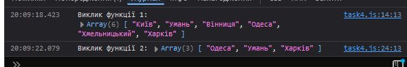

Завдання №2.4
HTML-код (task4.html)
<!DOCTYPE html> <html lang="en"> <head> <meta charset="UTF-8"> <meta name="viewport" content="width=device-width, initial-scale=1.0"> <title>= Task 4 =</title> <link rel="stylesheet" href="../style1.css"> </head> <body> <header></header> <main> <div class="button-container"> <h1>= Завдання №4 =</h1> <input type="button" class="button" onclick="window.location.href='../index.html'" value="На початкову сторінку"> <!-- Викликаємо відповідні JS-сценарії при натисканні кнопок --> <input type="button" class="button" onclick="callFunction1()" value="Виклик = 1 ="> <input type="button" class="button" onclick="callFunction2()" value="Виклик = 2 ="> </div> </main> <footer></footer> <script src="../tasks_js/task4.js"></script> </body> </html>
JS-код (task4.js)
// Об'єкт, що містить міста та дати концертів const concerts = { Київ: new Date("2020-04-01"), Умань: new Date("2025-07-02"), Вінниця: new Date("2020-04-21"), Одеса: new Date("2025-03-15"), Хмельницький: new Date("2020-04-18"), Харків: new Date("2025-07-10"), }; // Функція 1: Виводить список міст, де проходять концерти function callFunction1() { const cities = Object.keys(concerts); // отримуємо масив міст з об'єкта concerts console.log("Виклик функції 1:", cities); } // Функція 2: Виводить міста майбутніх концертів у порядку за датою function callFunction2() { const upcomingConcertCities = Object.entries(concerts) .filter(([city, date]) => date > new Date()) // фільтруємо майбутні концерти .sort(([, dateA], [, dateB]) => dateA - dateB) // сортуємо за датою концерту .map(([city]) => city); // отримуємо масив міст console.log("Виклик функції 2:", upcomingConcertCities); }
Результат виконання
Коментар до JS-коду
Цей код працює з об'єктом concerts, який містить міста як ключі та дати концертів як значення. Завдання полягає в тому, щоб отримати список міст, де ще не відбулись концерти, та відсортувати їх у хронологічному порядку. Спочатку, з об'єкта concerts, за допомогою Object.entries() створюється масив пар міст і дат концертів. Потім, за допомогою методу filter, відфільтровуються лише ті міста, де концерти ще не відбулись, тобто дата концерту більша за поточну. Після цього цей масив сортується за датами за допомогою методу sort і, нарешті, з нього отримуються тільки назви міст за допомогою методу map.